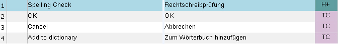

Updating a Translation Memory
In this chapter you will learn how to add content to a TM. While translators work they typically add translation units to the TM, or edit existing ones, e.g. by replacing past translations. In addition, updating a TM can also involve adding TM field information (e.g. project id, client) to the translation units. The following examples illustrate how to handle these common TM editing scenarios programmatically.
Add a New Class
Start by adding a new class called TmUpdater to your project.
Add a Translation Unit
One of the most common use cases is, of course, to add new translation units (TUs) to a TM. This usually happens while translators are translating segment by segment. For the next step we suppose that you would like to add a simple TU with plain text segments. Moreover, we assume that you need to add a picklist field value, i.e. Customer = Microsoft (see Adding TM Fields).
Start by implementing a function called AddTu, which takes the TM file name and path as string parameter, and which can be called as shown in the example below:
TMUpdater update = new TMUpdater();
update.AddTu(_translationMemoryFilePath);
update.AddTuExtended(_translationMemoryFilePath);
update.EditTu(_translationMemoryFilePath);
update.DeleteTu(_translationMemoryFilePath);
After opening the TM create a TU object:
FileBasedTranslationMemory tm = new FileBasedTranslationMemory(tmPath);
TranslationUnit tu = new TranslationUnit();
Each TU contains at least a source and a target segment. You therefore need to create a source and target segment object based on the TM language direction. Next, you specify the source and target content. In this example, we specify two strings, which works well if you only need to add plain text.
tu.SourceSegment = new Segment(tm.LanguageDirection.SourceLanguage);
tu.TargetSegment = new Segment(tm.LanguageDirection.TargetLanguage);
tu.SourceSegment.Add("A dialog box will open.");
tu.TargetSegment.Add("Es öffnet sich ein Dialogfenster.");
Note
If the source/target segment text to add requires tags - e.g. for inline formatting -, you need to specify an element rather than a simple string.
Let us assume that you would also like to add a picklist field value to the new TU. Start by creating the picklist field value object and add it to the TU object:
MultiplePicklistFieldValue value = new MultiplePicklistFieldValue("Customer");
value.Add("Microsoft");
tu.FieldValues.Add(value);
Finally, add the TU object to the TM:
MultiplePicklistFieldValue value = new MultiplePicklistFieldValue("Customer");
value.Add("Microsoft");
tu.FieldValues.Add(value);
Note that apart from the TU object the AddTranslationUnit method requires the import settings as parameter. Adding a single TU is basically like a mini-import. During import you can specify a number of settings, e.g. what should happen with potentially existing TM field values - whether they should be left unchanged, overwritten, or merged. Another setting allows you to check for sub-languages. Example: A user tries to add segments that have the locale English (UK) to a TM that uses English (US) as source language. Through the CheckMatchingSublanguages you can determine whether sub-language differences should be ignored (i.e. False), or whether English (UK) units should be rejected in this case. In our example, we specify the import settings in a separate function, which is then called from the AddTranslationUnit method:
private ImportSettings GetImportSettings()
{
ImportSettings settings = new ImportSettings();
settings.CheckMatchingSublanguages = true;
settings.ExistingFieldsUpdateMode = ImportSettings.FieldUpdateMode.Merge;
return settings;
}
Note
If the same TU already exists, it will not be added as a duplicate.
The following screenshot illustrates what the newly added TU will look like in Trados Studio:

Note
Information such as the creation date and user is added automatically by the API, and does not have to be explicitly set by your application.
Add Further Information to the Translation Unit
There are also other kinds of information that you may add to a TU. One example is the confirmation level. TUs may have confirmation levels such as draft, approved, rejected, etc., which indicate the quality and reliability of a translation. The confirmation level can be set through the TranslationUnitConfirmationLevel property.
Below is an example of how to set the TU confirmation level to approved:
tu.ConfirmationLevel = ConfirmationLevel.ApprovedTranslation;
Another example of further information that you may add is the TranslationUnitFormat, which can be used to indicate whether a TU is in the format ofTrados Studio, Translator's Workbench, TTX, etc. Below you see how the format is set to Trados Studio:
tu.Format = TranslationUnitFormat.SDLTradosStudio2009;
TUs may be created by filling a TM through interactive translation, from translation suggestions provided by a machine translation system, alignment of existing documents, etc. If you want to indicate the origin of a given TU, you can apply the TranslationUnitOrigin property. In the example below the TU origin is set to TM (i.e. generated by filling a translation memory through interactive translation):
tu.Origin = TranslationUnitOrigin.TM;
The full function for adding a TU looks as shown below:
public void AddTu(string tmPath)
{
#region "open"
FileBasedTranslationMemory tm = new FileBasedTranslationMemory(tmPath);
TranslationUnit tu = new TranslationUnit();
#endregion
#region "segments"
tu.SourceSegment = new Segment(tm.LanguageDirection.SourceLanguage);
tu.TargetSegment = new Segment(tm.LanguageDirection.TargetLanguage);
tu.SourceSegment.Add("A dialog box will open.");
tu.TargetSegment.Add("Es öffnet sich ein Dialogfenster.");
#endregion
#region "AddField"
MultiplePicklistFieldValue value = new MultiplePicklistFieldValue("Customer");
value.Add("Microsoft");
tu.FieldValues.Add(value);
#endregion
#region "ConfirmationLevel"
tu.ConfirmationLevel = ConfirmationLevel.ApprovedTranslation;
#endregion
#region "format"
tu.Format = TranslationUnitFormat.SDLTradosStudio2009;
#endregion
#region "origin"
tu.Origin = TranslationUnitOrigin.TM;
#endregion
#region "StuctureContext"
tu.StructureContexts = new string[] { "H" };
#endregion
#region "AddTu"
tm.LanguageDirection.AddTranslationUnit(tu, this.GetImportSettings());
tm.Save();
MessageBox.Show("TU has been added successfully.");
#endregion
}
TUs can also contain structure context information that indicates whether a particular segment occurred, for example, in a headline, a table cell, a footnote, etc. This structure context information can be helpful, as the same source segment might sometimes have to be translated differently depending on whether it occurs e.g. in a normal paragraph or in a table cell. For this reason, structure context information, too, can be saved with a TU. Trados Studio uses display codes such as H (Headline), FN (Footnote) to show the structure context of a particular TU to the user.

You can apply structure context information through the StructureContexts class as shown in the code example below:
tu.StructureContexts = new string[] { "H" };
When adding structure context information to a TU, you can provide an array of strings, as a particular segment could have occurred, for example, in a heading and a footnote at the same time.
Edit a Translation Unit
TUs are often changed when the translator decides that an existing target segment of a suggested translation unit should be changed, e.g. because the translation that was previously entered is incorrect or outdated. In the following step you will learn how to programmatically handle cases in which the target segment of an existing TU should be replaced by a new translation.
Start by adding a function called EditTu, which takes the TM file name and path as string parameter, and which can be called as shown below:
TMUpdater update = new TMUpdater();
update.AddTu(_translationMemoryFilePath);
update.AddTuExtended(_translationMemoryFilePath);
update.EditTu(_translationMemoryFilePath);
update.DeleteTu(_translationMemoryFilePath);
This new EditTu function simulates the use case in which a translator looks up the segment ""A dialog box will open."", and receives a 100% match, whose original target segment (Es öffnet sich ein Dialogfenster.) should be replaced with a new translation, (e.g. Ein Dialogfeld wird geöffnet.). In our simplified implementation, we first open the TM. Then we launch a search for the source segment. Like in the previous chapter (see Doing Translation Memory Lookups) we 'outsource' the search settings to a separate function, i.e.:
private SearchSettings GetSearchSettings()
{
SearchSettings settings = new SearchSettings();
settings.MinScore = 100;
return settings;
}
The search should yield one result (i.e. the previously added TU) that matches our search by 100%. We then clear the existing target segment and replace it with the corrected version as demonstrated in the following code example:
public void EditTu(string tmPath)
{
FileBasedTranslationMemory tm = new FileBasedTranslationMemory(tmPath);
SearchResults results = tm.LanguageDirection.SearchText(this.GetSearchSettings(), "A dialog box will open.");
foreach (SearchResult item in results)
{
if (item.ScoringResult.Match == 100)
{
item.MemoryTranslationUnit.TargetSegment.Clear();
item.MemoryTranslationUnit.TargetSegment.Add("Ein Dialogfeld wird geöffnet.");
item.MemoryTranslationUnit.SystemFields.UseCount++;
break;
}
}
tm.Save();
}
Delete a Translation Unit
Another use case is the deletion of a particular translation unit, for example, because it is outdated, incorrect, etc. Add a new function to your class, which you call DeleteTu. Here, we proceed similar to the editing of a TU (see section above), i.e. we first do an exact search for the source segment. We then retrieve the id of the TU that was found, and apply a delete action as shown in the following code example:
FileBasedTranslationMemory tm = new FileBasedTranslationMemory(tmPath);
SearchResults results = tm.LanguageDirection.SearchText(this.GetSearchSettings(), "A dialog box will open.");
foreach (SearchResult item in results)
{
if (item.ScoringResult.Match == 100)
{
PersistentObjectToken tuId = item.MemoryTranslationUnit.ResourceId;
tm.LanguageDirection.DeleteTranslationUnit(tuId);
break;
}
}
Note
Each TU possesses a unique id by which it can be identified within the TM.
It is also possible to 'wipe' the entire TM by applying the DeleteAllTranslationUnits, which will delete all translation units that are stored in the TM.
tm.LanguageDirection.DeleteAllTranslationUnits();
Note
Deleting all TUs in a TM is a potentially dangerous operation, which should only be performed in exceptional cases, as this batch deletion cannot be undone.